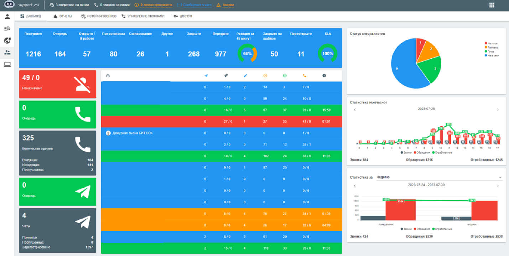

Один из основных инструментов сотрудника технической поддержки первой линии (1501). С его помощью регистрируется звонки, можно просмотреть входящие и исходящие, просроченные заявки, очередь, аварии и найти нужную информацию о пользователе.

Кликните на изображение для его увеличения